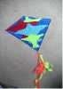
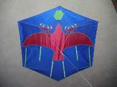
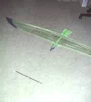
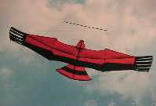
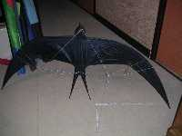
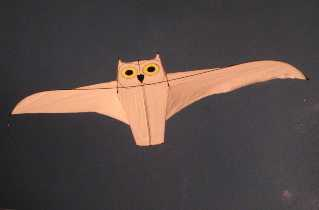
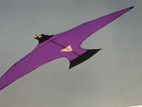
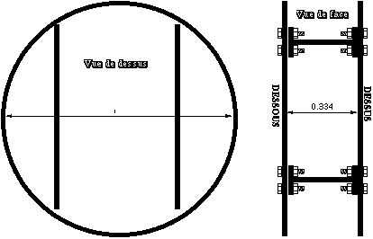
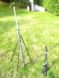
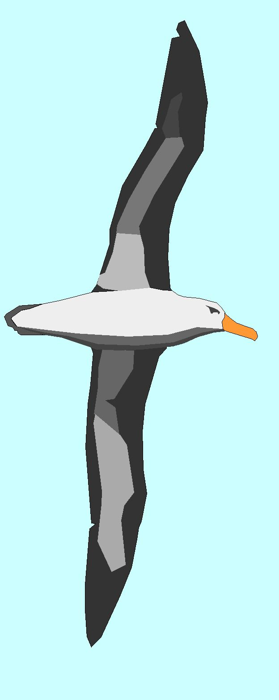

Le EDDYLe Eddy est un des premiers et des plus simples cerfs-volants. Sans doute très ancien de conception vue sa simplicité, il a été codifié par William Eddy en 1890.

Le ROKKAKULe Rokkaku est un cerf-volant chinois très ancien, son nom signifie "6 angles". Simple de construction, d'une surface plane facile à décorer, il est aussi facile à monter et démonter et vole bien dans la plupart des conditions. Il tire assez fort pour sa surface.
 L'Albatros
L'Albatros
Article paru au LUCANE n°96 (juin 01) et dans le NCB n°109 (oct 2001).
Plans de construction de l'Albatros et explications.
En Post-Scriptum : Modifications apportées depuis la rédaction.

Jonathan, allongement 5Article paru au LUCANE n°75 (janvier 96).
Possibilité de faire des cerfs-volants pilotables autres que des deltas.
Plans de construction de Jonathan.

Le KingArticle paru au LUCANE n°77 (juillet 96).
Un autre cerf-volant oiseau pilotable.
Plans et astuces de construction.

Hirondelle ? non, MartinetArticle paru au LUCANE n°78 (nov 96).
Plans de construction du Martinet.
En complément : Modifications apportées depuis la rédaction, version construite par les Cavaliers du ciel.

Le HarfangArticle paru au LUCANE n°94 (déc 2000).
Plans de construction du Harfang et commentaires.
Modifications pour l'indoor.

L'Oiseau LightArticle paru au LUCANE n°89 (sept 99).
Plans de construction de l'Oiseau Light et commentaires.

Force 10
Article paru au LUCANE n°103 (avril 03).
Plans de construction d'un cerf-volant résistant à Force 10.
Construction tout métal. Pas de photos en vol.

La Fusée à air compriméArticle paru dans le Lucane n° 132 (2ème trimestre 2010).
Une fusée légère, simple à construire et à transporter, et peu dangereuse. Pour s'amuser les jours sans vent !

La Geste de l' AlbatrosUn divertissement : la genèse de l'Albatros écrite en vers plus ou moins rimés :
"Les Albatros ? Un vol divin ! Ça serait beau si j'en f'sais un..."
En remerciement à ceux qui ont osé construire ce cerf-volant complexe !